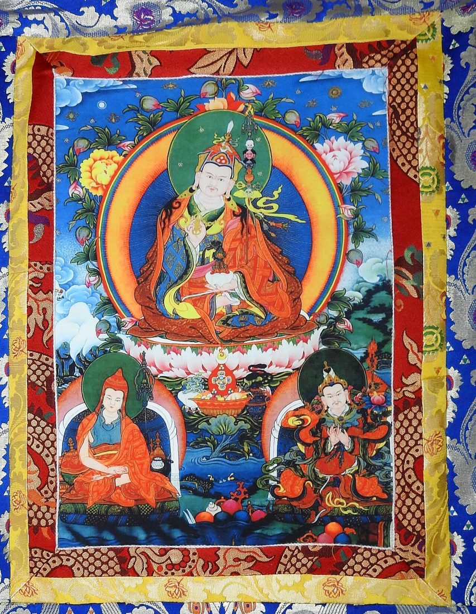
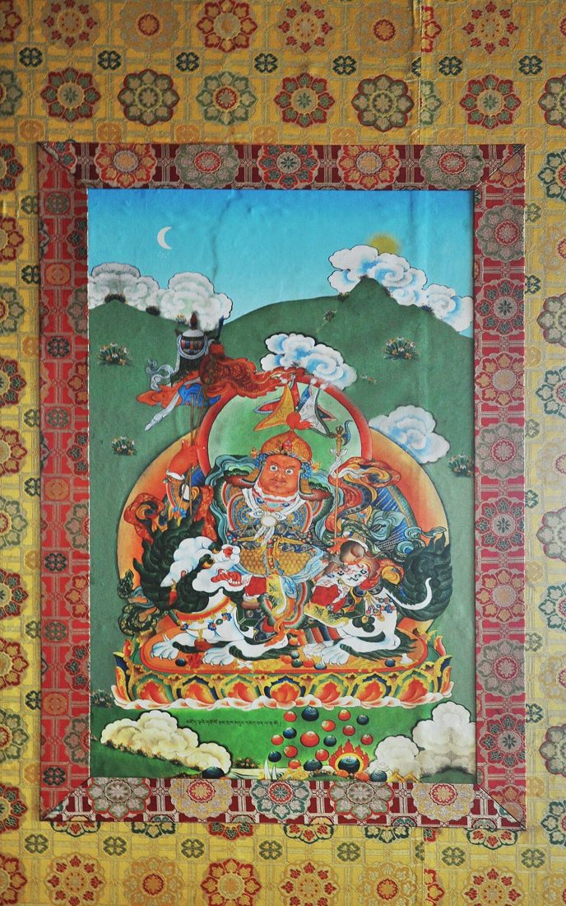

How to Care for and Frame a Thangka: Brocade, Light, and Humidity
A thangka is not a poster. It is a painting on cotton canvas, built up from a thin gesso ground and layers of mineral and plant pigments bound with animal glue, then traditionally sewn into a silk brocade mount so it can be rolled, carried, and hung. That construction is what gives a thangka its glow, and it is also what makes it sensitive. Light, damp, dry heat, and careless handling all leave marks over time.
The good news is that caring for a thangka is mostly common sense once you understand what it is made of. This guide walks through the brocade mount, the best place to hang a piece, how to manage light and humidity, simple cleaning, rolling and storage, and when framing makes sense.

Understanding the Brocade Mount
The traditional Tibetan mount is more than decoration. The painted panel is stitched into a frame of silk brocade, usually with thin red and yellow borders around the image, a wider main border, and a larger panel at the bottom often called the "door" or "gateway" panel. A wooden dowel runs through the top and bottom so the thangka hangs flat, and a thin silk veil and two ribbons usually hang in front, ready to cover the image when it is not being viewed.
Each part has a job. The borders protect the painted edges, the dowels keep the canvas from curling, and the veil shields the pigments from dust and light. If you are buying a new piece, ask whether it comes mounted or as a bare canvas. A bare canvas is easier to ship and frame; a mounted one is ready to hang the traditional way. Either way, look for even stitching, a mount that sits square, and brocade that does not pull or pucker around the painting. If you want a piece that is ready for this kind of care, you can Buy authentic thangka painting directly from painters who mount their work by hand.
Where to Hang a Thangka
Choose an inside wall
Exterior walls swing in temperature and can carry hidden damp, especially in older homes. An interior wall in a living room, study, or meditation space is usually the most stable choice. Keep the piece away from radiators, heating vents, fireplaces, and air-conditioning outlets, all of which create fast changes in temperature and moisture right at the canvas.
Avoid kitchens and bathrooms
Steam, cooking grease, and smoke settle on painted surfaces and are hard to remove without damaging the pigment. A hallway just outside these rooms is fine; the rooms themselves are not.
Hang it with respect and care
Traditionally a thangka is hung at or above eye level, never on the floor or below furniture, and many owners place it where they will see it each day. Use the top dowel and its cord on a secure hook, and make sure the bottom dowel can hang freely so the canvas stays flat.
Light: The Slow, Quiet Risk
Mineral pigments such as malachite green, azurite blue, and cinnabar red are relatively stable, but organic colors, gold detailing, and especially the silk brocade can fade in strong light. Damage from light is cumulative, so a little every day adds up over years.
- Keep the thangka out of direct sunlight at every hour of the day, including the low winter sun.
- Use UV-filtering film on nearby windows if the room is bright.
- Choose warm LED lighting, which gives off very little UV or heat, and avoid spotlights close to the canvas.
- Lower the silk veil or draw a curtain when the room is not in use.
Humidity and Temperature
Canvas, glue, and silk all respond to moisture. When the air is too damp, mold can grow and the glue binder can soften. When it is too dry, the paint layer can become brittle and start to crack or flake, particularly where the canvas has been rolled tightly. Sudden swings between the two are worse than either extreme.
A steady relative humidity of roughly 45 to 55 percent and a comfortable room temperature suit most thangkas. An inexpensive digital hygrometer will tell you what your room is really doing. In a humid climate, a dehumidifier in the room or a dry season air-conditioning setting helps; in a dry, heated home, a small humidifier placed well away from the painting keeps the air from becoming parched. Never mist or spray a thangka directly.

Cleaning and Handling
Less is more. Dust the brocade and the edges of the mount gently with a soft, clean brush, such as a wide makeup or artist's brush, working downward. Do not brush hard across the painted surface, and never use water, cleaning sprays, or cloths on the paint. Handle the piece with clean, dry hands, holding it by the dowels or the brocade rather than the painting itself. If you see flaking paint, mold spots, or a tear, stop and consult a textile or painting conservator rather than attempting a repair.
Rolling and Storing a Thangka
Thangkas were designed to be rolled, which is why they travel so well. To store one, roll it from the bottom up with the painted side facing outward, so the paint layer is stretched slightly rather than compressed. Roll loosely around the bottom dowel or a wide tube, interleave it with acid-free tissue, and wrap it in clean cotton. Store it flat on a shelf, not standing on one end, in a cool, dry closet rather than an attic or basement. Unroll stored pieces once or twice a year to check for pests or damp.
Should You Frame a Thangka?
Framing is a practical choice for busy homes, homes with children or pets, and rooms where dust is a problem. A good framer can float a bare canvas or even a fully mounted thangka in a deep shadow box so the brocade is preserved.
- Ask for acid-free mats and backing materials that will not yellow or stain the canvas.
- Choose UV-filtering glazing; museum-grade acrylic is lighter and safer than glass for large pieces.
- Make sure the glazing does not touch the paint surface. A spacer keeps a small air gap.
- Avoid dry-mounting, adhesives, or stretching the canvas tight over a board, as these are hard to reverse.
A framed thangka still needs the same care with light and humidity, but it is far better protected from dust, touching, and accidental knocks. If you are choosing a new piece specifically to frame, it often makes sense to Buy authentic thangka painting as an unmounted canvas, so the framer can work with it from the start.
These care principles apply to every kind of thangka, from a single deity to a complex geometric composition. If you own a mandala thangka, its fine linework makes steady light and humidity especially important; our guide to mandala thangka symbolism explains what each of its rings and gates represents.
Frequently Asked Questions
Can I hang a thangka in direct sunlight if it is behind glass?
It is better not to. Even UV-filtering glazing reduces rather than eliminates fading, and glass in direct sun can trap heat against the canvas.
How often should I clean a thangka?
A light dusting of the brocade every few months is usually enough. The painted surface itself should be left alone.
What does it mean if I see small cracks in the paint?
Fine cracking can come from age, tight rolling, or very dry air. Keep the piece flat and the humidity steady, and ask a conservator to look at any area that is lifting.
Is it disrespectful to frame a thangka?
No. Many monasteries and museums display thangkas behind glass. What matters most is that the piece is cared for and hung with respect.
Conclusion
A thangka rewards a little attention. Hang it on a stable inside wall, keep it out of direct sun, hold the humidity steady, dust gently, and roll it the right way when it needs to be stored. Whether you keep the traditional brocade mount or choose a protective frame, these habits will keep the colors bright and the canvas sound for generations, so the painting can keep doing what it was made for.